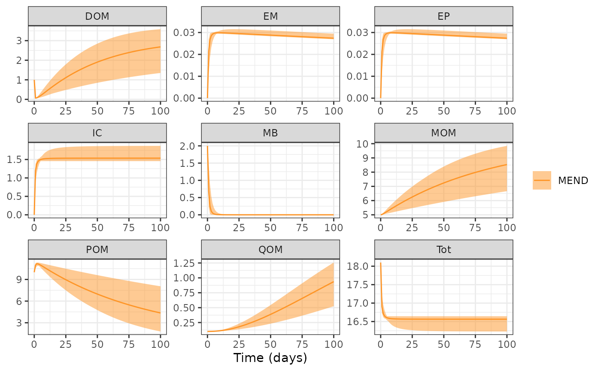

Global Sensitivity
sensRange.RmdThe objective of this example is demonstrate how to use
memc_sensrange to conduct a global sensitivity analysis and
visualize the results to demonstrate package capabilities.
The memc_sensrange function is a wrapper for
sensRange from the FME package, designed to help
memc users easily perform an analysis to estimate the
global effect of memc parameter or initial condition on
model output. The official FME
provides more details, but in short, memc_sensrange runs a
memc configuration using parameter combinations drawn from some
predefined distribution, running the model with each of these parameter
combinations producing an envelope of model results.
Start by loading the packages used in the demonstration.
Select the memc parameters or initial conditions to
include in the local sensitivity analysis. Any of the parameters
included in memc_params or memc_initial_state
may be considered. In this example we will consider how the memc MEND
configuration is sensitive to
and
,
the maximum and half saturation rates of DOM decomposition.
Set up a data frame of the parameter range to sample from, here we arbitrarily set the upper and lower bounds as 50% of the default parameter value.
pars <- c("V_d" = 3.0e+00,"V_p" = 1.4e+01,"V_m" = 2.5e-01)
prange <- data.frame(min = pars - pars * 0.5,
max = pars + pars * 1.5)
MENDsens_out <- memc_sensrange(config = MEND_config, # memc configuration
t = 0:100, # the time steps
x = pars, # default parameter values
parRange = prange, # parameter range to sample from
dist = "latin", # sampling distribution to use, "latin" hyper cube or "norm"al
n = 50) # the number of model runs/parameters to sampleThe returned data frame includes the mean, standard deviation, range, and several interquartile values for the organic material pools.
head(MENDsens_out)
#> name time Mean Sd Min Max q05 q25 q50
#> 1 MEND 0 10.00000 0.0000000 10.00000 10.00000 10.00000 10.00000 10.00000
#> 2 MEND 1 10.99332 0.2097380 10.53076 11.27360 10.60739 10.84239 11.04808
#> 3 MEND 2 11.16929 0.1334032 10.82295 11.33956 10.90632 11.10995 11.18340
#> 4 MEND 3 11.15270 0.1108076 10.90445 11.34554 11.00212 11.07543 11.15764
#> 5 MEND 4 11.07938 0.1389218 10.82958 11.31549 10.86812 10.97690 11.07309
#> 6 MEND 5 10.98552 0.1791477 10.64785 11.27724 10.69858 10.84779 10.97733
#> q75 q95 variable
#> 1 10.00000 10.00000 POM
#> 2 11.16067 11.24182 POM
#> 3 11.27091 11.33303 POM
#> 4 11.23717 11.31877 POM
#> 5 11.19004 11.28761 POM
#> 6 11.13858 11.25661 POMQuickly visualize results with the ribbon bounds controlled by the lower and upper bound arguments.
plot(MENDsens_out, lower = "Min", upper = "Max")